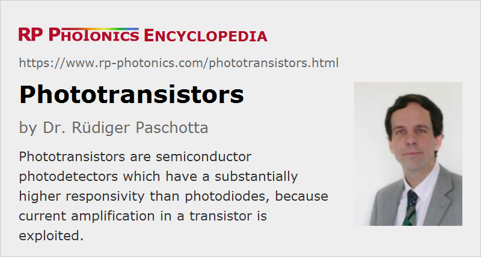

Phototransistors
Definition: a type of semiconductor-based photodetector with internal current amplification for higher responsivity
More general term: photodetectors
German: Phototransistor
Categories: photonic devices, light detection and characterization, optoelectronics, optical metrology
How to cite the article; suggest additional literature
Author: Dr. Rüdiger Paschotta
Phototransistors are semiconductor-based photodetectors. One needs to distinguish the common bipolar devices from field effect phototransistors (photoFETs); both types are discussed in the following, although the former one is much more common. Phototransistors are not as widely used as photodiodes, with commercially available variance not covering as wide parameter regions in terms of wavelength ranges, quantum efficiency, active area, detection bandwidth etc.
Bipolar Phototransistors
Operation Principle, Increased Responsivity
A bipolar phototransistor is essentially an electronic transistor structure, where light from outside can hit the base–collector junction. The created electrical carriers are injected into the base, thus having a similar effect as a base current injected through a wire in an ordinary transistor. The resulting collector current exhibits substantial amplification, easily by a factor of 100 or more.
The responsivity of the device is correspondingly higher than that of a photodiode. However, this does not necessarily lead to a higher sensitivity of detection, i.e., to a lower noise-equivalent power, because photocurrent noise is also amplified. The same holds for the dark current, i.e., the current flowing even without any incident light.
Detection Bandwidth
A substantial the drawback of the phototransistor concept is that it generally leads to a substantially lower speed (detection bandwidth), limited by the electrical capacitance of the collector–base junction. Typical rise and fall times are of the order of a few microseconds.
Spectral Regions
Phototransistors can be based on different semiconductor materials such as germanium, silicon and gallium arsenide. Due to their different bandgap energies, they are usable in different wavelength regions – similar to those of photodiodes based on the same materials.
Note that an ordinary transistor would also be light-sensitive, if it were not equipped with a non-transparent housing. However, phototransistors are not just ordinary transistors with a transparent housing; they have further optimized structures, e.g. for efficient illumination of the collector–base junction.
Two or Three Pins; Electrical Circuits
In most cases, a phototransistor has only two pins (for a emitter and collector), but there are also devices with an additional base pin. The former type can be used in the same kind of electronic circuits like photodiodes, e.g. simply in series with a resistor connected to a constant voltage. The resulting voltage drop on the resistor is then approximately proportional to the incident light intensity. The use of a transimpedance amplifier offers better performance, however.
If there is an additional base pin, one may connect this via an additional resistor with the emitter. The applied resistance influences both the responsivity and the dark current.
Linearity and Temperature Dependence
The linearity of response (photocurrent vs. light intensity) of a phototransistor is substantially less precise than that of a photodiode, because the gain of the phototransistor depends on the collector current.
The photocurrent also exhibits a substantially higher temperature dependence than for a photodiode, because the transistor gain depends on temperature.
Photodarlingtons
For even higher responsivity, there are photodarlingtons. In analogy to conventional Darlington transistors, there is an additional internal transistor for further current multiplication. Unfortunately, the detection bandwidth of such devices is further reduced. Rise and fall times are typically tens to hundreds of microseconds.
Comparison with Avalanche Photodiodes
Avalanche photodiodes also offer a substantially increased responsivity and are in that sense similar to phototransistors. However, the operation principle is quite different. In an avalanche photodiodes, one exploits carrier multiplication due to a carrier avalanche within a depletion region, not a transistor-like amplification. For that, significantly higher operation voltages are required, and the multiplication factor depends quite sensitively on the operation voltage. Also, the detection bandwidth can be much higher. In contrast, phototransistors can be operated with only a few volts, and the dependence of the responsivity on the drive voltage is not that strong.
Field Effect Phototransistors
Field effect phototransistors (photoFETs) are essentially field-effect transistors which can be controlled with light. Their working principles and operation characteristics differ substantially from those of bipolar phototransistors. The gate of such a device essentially does not require a drive current, only a drive voltage. That voltage is not necessarily provided through the photoelectric effect in the device; one may also exploit bolometric effects, i.e. effects of heating. Very sensitive infrared detectors have been realized based on such principles.
Applications of Phototransistors
Phototransistors are attractive for applications where the higher responsivity compared with that of a photodiode is of interest, while possible disadvantages in terms of detection bandwidth and linearity are not of substantial relevance. That can be the case, for example, for some opto-isolators and light curtain detectors.
Suppliers
The RP Photonics Buyer's Guide contains 3 suppliers for phototransistors.
Questions and Comments from Users
Here you can submit questions and comments. As far as they get accepted by the author, they will appear above this paragraph together with the author’s answer. The author will decide on acceptance based on certain criteria. Essentially, the issue must be of sufficiently broad interest.
Please do not enter personal data here; we would otherwise delete it soon. (See also our privacy declaration.) If you wish to receive personal feedback or consultancy from the author, please contact him e.g. via e-mail.
By submitting the information, you give your consent to the potential publication of your inputs on our website according to our rules. (If you later retract your consent, we will delete those inputs.) As your inputs are first reviewed by the author, they may be published with some delay.
See also: photodiodes, photodetectors, opto-isolators, responsivity
and other articles in the categories photonic devices, light detection and characterization, optoelectronics, optical metrology
|  |
If you like this page, please share the link with your friends and colleagues, e.g. via social media:
These sharing buttons are implemented in a privacy-friendly way!